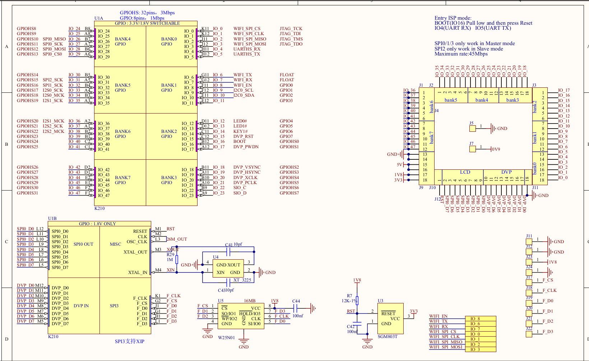

Update onboard ESP8285 firmware
Introduction:
At present, MaixPy series adopt M1W module as the core module development boards: MaixDock(M1W), MaixGo
Normally we don’t need to update the firmware of the WIFI SOC ESP8285 inside the module, but if there is a bug in the use process, and a new version of the firmware is released, we can update the firmware
The ESP8285 in the M1W module used by MaixDock and MaixGo burns AT firmware by default
Verify that ESP8285 can work normally
- MaixPy verifies whether ESP8285 is working properly
View the end of text routine
External USB to serial module test
Use USB to serial port module, connect according to the following table, and then power on
| M1W | USB Module | Description |
|---|---|---|
| M1W GND | GND | Common ground |
| K210 (IO6)/ESP8285 TX | RX | - |
| K210 (IO7)/ESP8285 RX | TX | - |
| k210 RST (ground before power on, pull down RST during the whole process) | GND |
After power-on, the board will output serial port (here XCOM, baud rate 115200) to verify whether ESP8285 starts normally

AT command set
ESP8285 and ESP8266 are the same series of products, using the same set of AT commands
ESP8285/ESP8266/ESP32 latest AT command set https://github.com/espressif/esp-at/blob/v2.0.0.0_esp8266/docs/ESP_AT_Commands_Set.md
Update ESP8285 firmware steps
Before burning ESP8285 firmware, first understand the ESP8285 burning principle:
ESP8285 firmware burning principle
When ESP8285 is powered on, it will determine the state of the boot stapping pin and determine the boot mode, such as:
ets Jan 8 2013,rst cause:1, boot mode:(3,2)
The first digit (3) of the printed boot mode represents the current boot mode.
Boot mode is determined by the 3-bit value of strapping pin [GPIO15, GPIO0, GPIO2]. As shown in the following table
Show:
| 3-bit value of strapping pin/[GPIO15, GPIO0, GPIO2] | Boot mode |
|---|---|
| 7 / [1, 1, 1] | SDIO HighSpeed V2 IO |
| 6 / [1, 1, 0] | SDIO LowSpeed V1 IO |
| 5 / [1, 0, 1] | SDIO HighSpeed V1 IO |
| 4 / [1, 0, 0] | SDIO LowSpeed V2 IO |
| 3 / [0, 1, 1] | Flash Boot |
| 2 / [0, 1, 0] | Jump Boot |
| 1 / [0, 0, 1] | UART Boot |
| 0 / [0, 0, 0] | Remapping |
Please see the following table for the IO level of ESP8285 entering different modes:
| Mode | CH_PD(EN) | RST | GPIO15 | GPIO0 | GPIO2 | TXD0 |
|---|---|---|---|---|---|---|
| UART download mode | High | High | Low | Low | High | High |
| Flash operating mode | High | High | Low | High | High | High |
| Chip Test Mode | - | - | - | - | - | Low |
That is, ESP8285 enters UART download mode, the first bit of the startup information mode should be mode:(1, X), as follows:
ets Jan 8 2013,rst cause:1, boot mode:(1,1)
Taking MaixDock as an example, you can see the schematic diagram of MaixDock as follows:


Preparation
Here is MaixDock(M1W), Windows 10 system as an example
- Hardware: MaixDock, USB Type-C data cable
Software:
ESP firmware update tool: ESP8285 flash_download_tools
- Espressif's official website download link: flash_download_tools
ESP8285 AT firmware:
- Download link: ESP8266 AT bin
- Espressif's official download link: espressif_esp8266-at

Windows uses flash_download_tools to update ES8285 (here, MaixDock is taken as an example):
Follow the configuration below to connect to MaixDock,
Connect the USB to serial port module and ESP8285, the connection method has been introduced above
Before power-on, GPIO0 needs to be pulled down, that is, the contact in the upper left corner next to the antenna is grounded to enter the UART download mode.

Open flash_download_tools
Download MaixDock ESP8285 firmware

Select ESP8285 serial port (usually the serial port number is relatively large)
Set download options:
Configure the corresponding options as shown in the figure, note that the baud rate must be set to 115200**

Click Start to update the firmware and wait for the update to complete
Verify that the update is complete
- Use the XCOM baud rate of 115200, open the ESP8285 serial port, and output
AT\r\n, as shown in the figure, it promptsOKto flash in successfully

- Use the XCOM baud rate of 115200, open the ESP8285 serial port, and output
LINUX uses esp_tool to update ES8285 (here, MaixDock is taken as an example):
Follow the configuration below to connect to MaixDock,

Install esptool
pip3 install esptoolDownload MaixDock ESP8285 firmware
ls /dev/ttyUSB* # View USB serial port esptool --port /dev/ttyUSB0 write_flash 0x0 ESP8285-AT-V1.7.4_8Mbit_40Mhz.bin # Burn the firmwareVerify that the update is complete
Use XCOM baud rate 115200, open ESP8285 serial port, output
AT\r\n, as shown in the figure, promptOK, then flashing is successful
MaixPy routine test:
import network, time
from machine import UART
from Maix import GPIO
from fpioa_manager import fm
# En SEP8285 rst
#fm.register(8, fm.fpioa.GPIOHS0, force=True)
#wifi_en=GPIO(GPIO.GPIOHS0, GPIO.OUT)
#wifi_en.value(1)
# En SEP8285 rst
fm.register(0, fm.fpioa.GPIOHS0, force=True)
wifi_io15=GPIO(GPIO.GPIOHS0, GPIO.OUT)
wifi_io15.value(0)
fm.register(8, fm.fpioa.GPIOHS1, force=True)
wifi_en=GPIO(GPIO.GPIOHS1, GPIO.OUT)
wifi_en.value(1)
# for new MaixGO board, if not, remove it
#fm.register(0, fm.fpioa.GPIOHS1, force=True)
#wifi_io15_en=GPIO(GPIO.GPIOHS1, GPIO.OUT)
#wifi_io15_en.value(0)
fm.register(6, fm.fpioa.UART2_RX, force=True)
fm.register(7, fm.fpioa.UART2_TX, force=True)
uart = UART(UART.UART2,115200,timeout=1000, read_buf_len=4096)
def wifi_enable(en):
global wifi_en
wifi_en.value(en)
def wifi_deal_ap_info(info):
res = []
for ap_str in info:
ap_str = ap_str.split(",")
info_one = []
for node in ap_str:
if node.startswith('"'):
info_one.append(node[1:-1])
else:
info_one.append(int(node))
res.append(info_one)
return res
#wifi_enable(0)
time.sleep(2)
nic = network.ESP8285(uart)
ap_info = nic.scan()
ap_info = wifi_deal_ap_info(ap_info)
ap_info.sort(key=lambda x:x[2], reverse=True) # sort by rssi
for ap in ap_info:
print("SSID:{:^20}, RSSI:{:>5}, MAC:{:^20}".format(ap[1], ap[2], ap[3]))